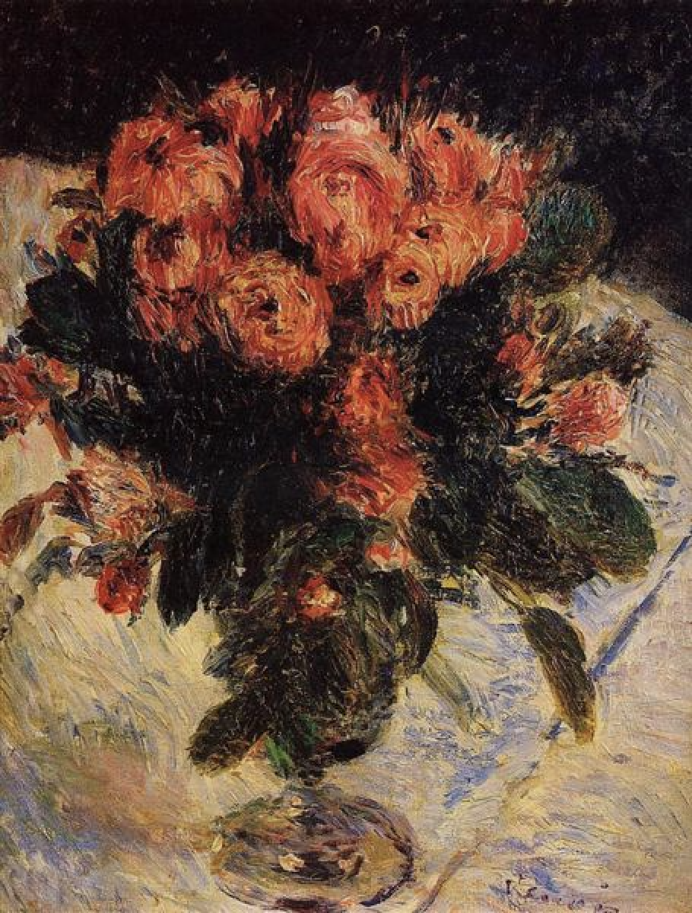
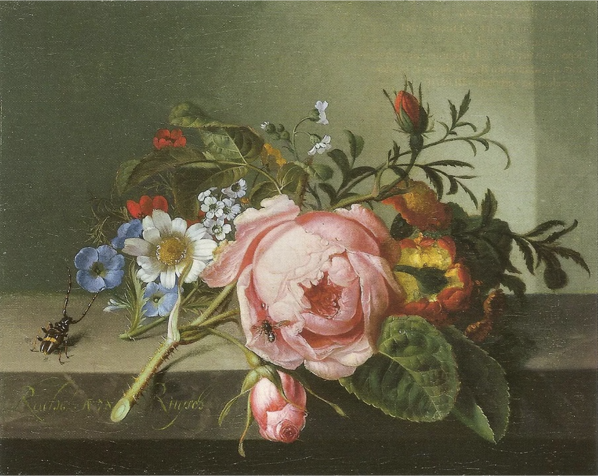
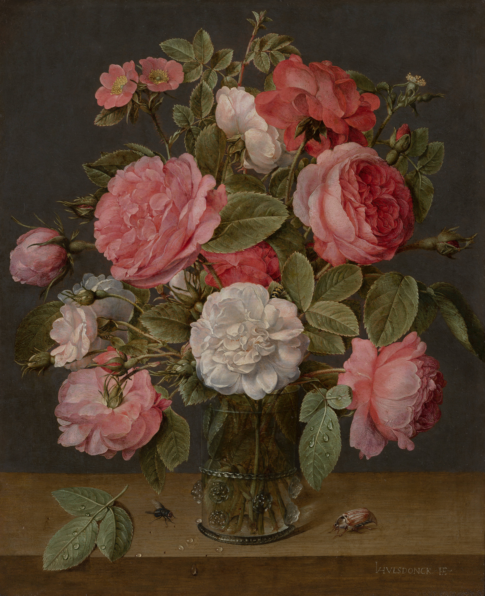
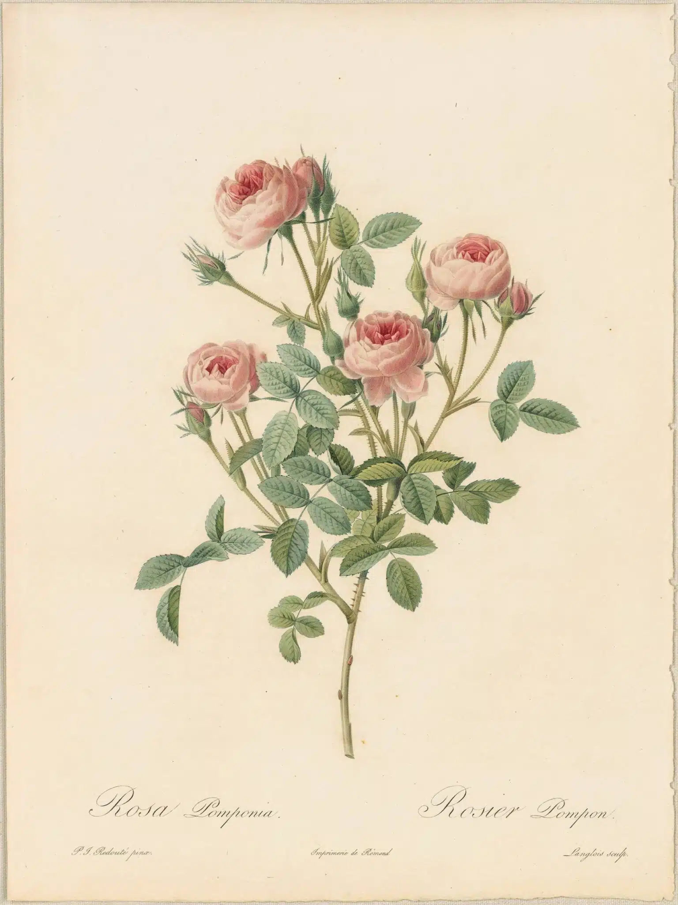

Vincent van Gogh
Roses | 1890
In Roses (1890), Vincent van Gogh focuses on the natural beauty and delicate form of the flowers. His use of soft colours and visible brushstrokes creates a sense of texture and movement, making the roses feel alive. Rather than aiming for perfect realism, van Gogh expresses emotion through colour and style. The painting gives a calm and peaceful impression, while still capturing the complexity of nature. This approach shows how roses can be both visually beautiful and emotionally expressive.
View More DetailsPierre-Auguste Renoir
Roses | 1890
Pierre-Auguste Renoir’s Roses (1890) highlights the gentle and romantic qualities of the flowers. Using soft lighting and blended colours, Renoir creates a warm and inviting atmosphere. His impressionist style focuses more on the feeling of the scene rather than precise detail, allowing the viewer to experience the beauty of the roses in a more emotional way. The painting captures a moment of natural elegance and softness. Through this, roses are presented as symbols of beauty, warmth, and quiet joy.
View More Details

Rachel Ruysch
Still Life with Rose Branch, Beetle, and Bee | 1741
In this still life, Rachel Ruysch combines roses with insects and other natural elements to create a detailed and realistic composition. The inclusion of a beetle and bee adds movement and life to the scene, making it feel more dynamic. At the same time, the painting reflects the idea that nature is both beautiful and temporary. The delicate petals of the roses contrast with the presence of insects, suggesting the passing of time. This gives the artwork a deeper meaning beyond its visual appearance.
View More DetailsJacob van Hulsdonck
Roses in a Glass Vase | c. 1640-1645
Jacob van Hulsdonck’s still life painting presents roses arranged carefully in a simple glass vase. The composition draws attention to the colour, texture, and shape of the flowers, showing a strong focus on detail. At first glance, the painting appears to celebrate beauty and elegance. However, like many still life works, it also suggests that this beauty is temporary. The roses will eventually fade, reminding viewers of the passing nature of time and life.
View More Details

Pierre-Joseph Redouté
Redouté Roses Pl. 21, Mos Rose “De Meaux” | c. 1817-1824
Pierre-Joseph Redouté’s Les Roses is a collection of detailed botanical illustrations that carefully study different types of roses. Unlike more expressive paintings, his work focuses on accuracy, structure, and scientific observation. Each illustration shows the shape, colour, and form of the rose with great precision, making it both artistic and educational. At the same time, the elegance of his drawings highlights the natural beauty of the flowers. This combination of art and science makes his work especially significant in the study of plants.
View More of Redouté’s Rose Illustrations